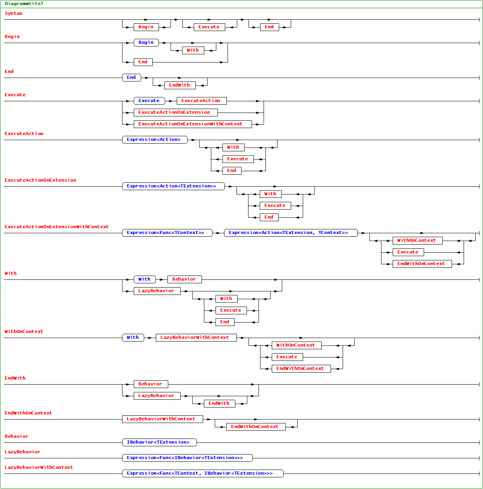

---
layout: documentation
title: Bootstrapper
teaser: Accelerates your application bootstrapping mechanism
navigation:
- name: Tutorial
link: bootstrappertutorial.html
- name: Configuration Sections
link: bootstrapperconfigurationsections.html
- name: Syntax
link: bootstrappersyntax.html
- name: Tips and Tricks
link: bootstrappertipsandtricks.html
- name: Reports
link: bootstrapperreports.html
- name: Specifications
link: bootstrapperspecifications.html
---
Syntax
The strategy above shows part of the fluent definition syntax the bootstrapper uses to gain knowledge about the startup and shutdown phase of the system. Here the Extended Backus-Naur-Form of the syntax:

Note:TODO Check EBNF. The diagramm above is created with the amazing ebnfvisualize.